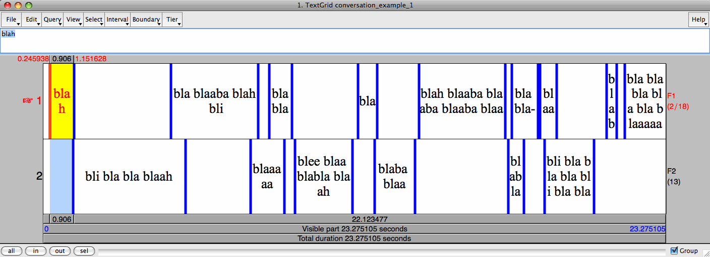
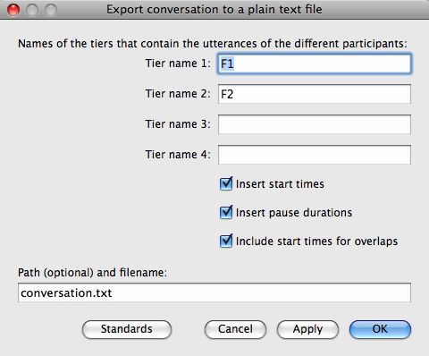

Praat-ohjelmalla annotoidun keskustelun litteraatin vieminen tekstitiedostoon
Mietta Lennes
30.12.2009
|

|
→ |
conversation_example_1 (Tue Dec 29 17:05:15 2009)
F1: blah
F2: bli bla bla blaah
F1: bla blaaba blah bli
F2: blaaaaa
F1: blabla
F2: blee blaa blabla blaah
F1: bla
F2: blaba blaa
F1: blah blaaba blaaba blaaba blaa
F2: blabla
F1: bla bla-
blaah
F2: bli bla bla bla bli bla bla
F1: blabl-
bla bla bla bla bla blaaaaah
|
Huom. Tässä kuvattu Praat-skripti on vasta testikäytössä ja saattaa siis sisältää virheitä! Jos skripti ei mielestäsi toimi oikein tai huomaat tässä ohjeessa puutteita, otan mielelläni sähköpostitse vastaan korjausehdotuksia.
Valitettavasti en kuitenkaan voi tarjota henkilökohtaista neuvontaa skriptin käytössä!
Johdanto
Jos olet nimikoinut (annotoinut) keskusteluäänitteen Praat-ohjelmalla, voit oheisen Praat-skriptin avulla siirtää tekemäsi litteraatin Praatin TextGrid-objektista tavalliseen tekstitiedostoon, jota voit edelleen muokata ja käyttää helposti tulostettavana aineistosi sisällön tekstimuotoisena kuvauksena tai esimerkiksi esitelmissä tai julkaisuissa.
Samalla skriptillä voit keskustelulitteraattien lisäksi viedä helposti luettavaan muotoon mitä tahansa muutakin Praatilla nimikoitua aineistoa. Tässä ohjeessa käytetään esimerkkinä keskustelupuhetta.
Esivaatimuksena on, että sinulla on Praat-ohjelman objektilistalla valittuna täsmälleen yksi TextGrid-muotoinen objekti, joka sisältää kunkin keskusteluun osallistuvan puhujan puhunnokset rajattuina ja litteroituina omaan nimikointikerrokseensa (tier). TextGridissä on siis oltava (vähintään) yhtä monta kerrosta kuin keskustelussa on osallistujia.
Lopputuloksena on raakatekstitiedosto, jossa on kunkin keskusteluun osallistuneen puhujan puhunnokset omilla riveillään alkamisaikojen mukaisessa järjestyksessä. Puhujan vaihtuessa rivin alkuun tulee automaattisesti puhujan tunnus. Kokonaan päällekkäispuhutut puhunnokset merkitään hakasulkeisiin. Puhunnosten väliin voidaan myös automaattisesti laskea ja merkitä sulkeisiin taukojen kestot sekunteina. Lisäksi voidaan laskea myös mahdollisen päällekkäispuhunnan alkamisaika suhteessa edeltävän puhunnoksen päättymiseen sekunteina. Tämä merkitään sulkeisiin samoin kuin tauon kesto, mutta luku on negatiivinen, esim. (-0.20 s) tarkoittaa, että seuraava puhunnos on puhuttu edellisen puhujan päälle ja se on alkanut 0,2 sekuntia ennen edeltävän puhunnoksen päättymistä.
Miksi keskustelupuhetta kannattaa litteroida Praatilla?
- Pienen harjoittelun jälkeen puheaineiston litteroiminen Praatilla on helppoa ja nopeaa, sillä äänitiedostosta voidaan toistuvasti kuunnella halutun pituisia pätkiä (ks. suomenkielinen Praat-opas: 6. Nimikointi).
- Puheaineistojen tutkimuksessa on tärkeää, että alkuperäiseen äänimateriaaliin voidaan tarvittaessa vedota. Oheista Praat-skriptiä käyttämällä tutkija voi hyödyntää rinnakkain sekä äänimateriaalia että sen helpommin luettavaa tekstimuotoista kuvausta.
- Kun peruslitteraatti on tehty Praatilla ja tekstimuotoiseen litteraattiin lisätään puhunnosten alkamisajat alkuperäisessä äänitiedostossa, löytyy haluttu kohta äänimateriaalista helposti vielä jälkikäteen.
- Praatilla valmiiksi rajattu ja nimikoitu puhunnos tai muu katkelma on helppo koska tahansa kuunnella uudelleen.
- Praatilla tehty litteraatti rohkaisee tutkijaa myös käyttämään erilaisia akustisia mittaus- ja kuvantamismenetelmiä. Litteraatin täydennykseksi voidaan esimerkiksi kuvantaa tarkasti keskustelunäytteen tiettyyn kohtaan liittyviä akustis-foneettisia ilmiöitä.
Huom. Akustisten mittausten tekeminen ja asianmukainen tulkinta vaatii riittävän hyvälaatuista ja tarpeeksi hälytöntä äänitallennetta sekä perehtymistä käytettyyn analyysimenetelmään ja sen foneettisiin taustatekijöihin. Esimerkiksi puheen sävelkulkuun ja intonaatioon liittyvää perustaajuuskäyrää (Praatissa Pitch) voidaan vahingossa käyttää tai tulkita väärin, jollei perustaajuusanalyysin rajoituksia tunneta tai jollei analyysin asetuksia ole määritetty ko. näytteelle/puhujalle sopiviksi. Lisätietoa löytyy esim. Praat-oppaasta ja Praat-ohjelman sisäisiltä manuaalisivuilta (Help).
- Puhunnoskerrosten lisäksi keskusteluäänitteen annotaatioon voidaan lisätä haluttu määrä muitakin nimikointikerroksia esim. paralingvistisiä ilmiöitä, äänenlaatua tai sekalaisia kommentteja varten. Tarvittaessa aineiston akustis-foneettista analyysia voidaan tarkentaa ja syventää lisäämällä annotaatioon esimerkiksi sana- ja äännekerrokset, joita nimikoidaan halutuilta osin. Tarkkoja segmentointeja voidaan käyttää esimerkiksi tiettyjen mittauspisteiden määrittämiseen ja muistiinmerkitsemiseen tai kuvien piirtämiseen.
- Kaikki muutokset ja korjaukset kannattaa tehdä alkuperäiseen Praatin TextGrid-tiedostoon, josta voi aina halutessaan tuottaa skriptillä uusia tekstiversioita.
Esimerkki
Kuvitellaan, että Praatilla on nimikoitu seuraavanlainen keskustelunäyte, jossa esiintyy kaksi puhujaa (F1 ja F2):
Kun kyseinen litteraatti siirretään oheisella Praat-skriptillä tekstitiedostoksi, saadaan tällainen lopputulos:
Yksinkertainen litteraatti:
conversation_example_1 (Tue Dec 29 17:05:15 2009)
F1: blah
F2: bli bla bla blaah
F1: bla blaaba blah bli
F2: blaaaaa
F1: blabla
F2: blee blaa blabla blaah
F1: bla
F2: blaba blaa
F1: blah blaaba blaaba blaaba blaa
F2: blabla
F1: bla bla-
blaah
F2: bli bla bla bla bli bla bla
F1: blabl-
bla bla bla bla bla blaaaaah
|
Täydellinen litteraatti, johon on lisätty puhunnosten alkamisajat, taukojen kestot ja päällekkäispuhunnan kestot:
conversation_example_1 (Tue Dec 29 16:45:22 2009)
[0.25 s] F1: blah
(-0.04 s)
[1.12 s] F2: bli bla bla blaah
(-0.54 s)
[4.77 s] F1: bla blaaba blah bli
(-0.29 s)
[7.74 s] F2: blaaaaa
(-0.57 s)
[8.44 s] F1: blabla
(0.10 s)
[9.40 s] F2: blee blaa blabla blaah
(0.20 s)
[11.75 s] F1: bla
(-0.10 s)
[12.38 s] F2: blaba blaa
(0.16 s)
[14.04 s] F1: blah blaaba blaaba blaaba blaa
(0.11 s)
[17.37 s] F2: blabla
(-0.46 s)
[17.50 s] F1: bla bla-
(0.08 s)
[18.57 s] blaah
(-0.46 s)
[18.73 s] F2: bli bla bla bla bli bla bla
(0.47 s)
[21.05 s] F1: blabl-
(0.31 s)
[21.73 s] bla bla bla bla bla blaaaaah
|
Skriptin käyttöohje
- Hae ja tallenna Praat-skripti save_conversation_tiers_as_text_file.praat koneellesi sopivaan paikkaan. Valitse hakemisto, jonka löydät koneelta helposti.
- Avaa Praatiin se TextGrid-tiedosto, josta haluat tuottaa ihmisluettavan litteraatin.
Jos eri puhujien puhe on litteroitu tai transkriboitu eri TextGrid-tiedostoihin (jotka ovat kuitenkin samankestoisia ja kuvaavat samaa äänitallennetta), sinun on ensin yhdistettävä samaan TextGrid-objektiin ne nimikointikerrokset (tier), jotka haluat mukaan litteraattiin. Praatin objekti-ikkunassa voit eristää valitusta TextGrid-objektista tietyn nimikointikerroksen painamalla Extract tier... ja antamalla kerroksen numeron, jolloin nimikointikerrosta vastaava objekti ilmestyy objektilistalle. Näin eristetyt IntervalTier-kerrokset voi tarvittaessa nimetä uudelleen objekti-ikkunan alareunassa olevalla Rename-painikkeella (Varo painamasta vahingossa Remove-nappia, joka poistaa valitun objektin mitään kysymättä!). Sitten IntervalTierit pitää jälleen yhdistää uudeksi TextGrid-objektiksi valitsemalla kaikki tierit yhtä aikaa objektilistalta ja painamalla Into TextGrid. (Uusi TextGrid-objekti kannattaa varmuuden vuoksi tallentaakin omana tiedostonaan, jos sen kokoamisessa on kova työ.)
- Nimeä tarvittaessa uudelleen ne TextGrid-objektin nimikointikerrokset, jotka haluat sisällyttää litteraattiin. Kerrosten nimiä käytetään litteraatissa ko. puhujan tunnisteena. Kannattaa käyttää lyhyitä, esim. 2-3 merkin pituisia koodeja. Oheisessa kuvitteellisessa esimerkissä kerrokset on nimetty puhujien koodeilla F1 ja F2.
Nimikointikerrosten järjestyksellä ei ole väliä - puhunnokset tallentuvat litteraattiin alkamisaikojensa mukaisessa järjestyksessä.
Huom. Skripti toimii toistaiseksi vain IntervalTier-tyyppisillä annotaatiokerroksilla, joihin merkitään aikavälejä ja niiden nimikkeitä (ei siis PointTier-tyyppisillä kerroksilla, joissa nimikkeitä annetaan yksittäisille aikapisteille)!
- Avaa äsken tallentamasi skripti save_conversation_tiers_as_text_file.praat Praatin objekti-ikkunan komennolla Praat:Open Praat script... (tai Read:Read from file...).
- Valitse skripti-ikkunassa Run:Run. Näkyviin tulee seuraavanlainen lomake:

- Kirjoita neljään ylimpään kenttään niiden TextGrid-objektin sisältämien kerrosten nimet, jotka haluat sisällyttää litteraattiin (ts. kirjoita puhujien koodit). Alkuperäisen TextGridin kerrosten järjestyksellä ei ole väliä.
Tällä hetkellä skripti tukee enintään neljää eri puhujaa. Jos puhujia on esimerkiksi vain kaksi, kirjoita koodit kahteen ylimpään kenttään ja jätä vastaavasti kaksi alempaa kenttää tyhjiksi.
- Yksinkertaisimman mahdollisen litteraatin saat poistamalla ruksin seuraavista kolmesta valintaruudusta. Tällöin litteraattiin tulee vain puhujien koodit ja puhunnosten TextGridiin merkityt litteraatit.
- Jos haluat, että litteraatin jokaisen rivin alkuun lisätään hakasulkeissa kyseisen puhunnoksen alkamisaika alkuperäisessä TextGridissä (sekunteina kahden desimaalin tarkkuudella, ks. ylläoleva esimerkki), ruksaa kohta Insert start times.
- Jos haluat, että kunkin puhunnosrivin väliin merkitään sulkeissa mahdollisen tauon kesto (sekunteina), ruksaa kohta Insert pause durations.
Tauko tarkoittaa sitä tallenteen osaa välittömästi ko. puhunnoksen jälkeen, jonka aikana kukaan ei puhu (ts. jonka aikana missään nimikointikerroksista ei ole tekstiä).
- Jos haluat, että kunkin puhunnosrivin väliin merkitään sulkeissa seuraavan puhunnoksen alkua koskevan päällekkäispuhunnan kesto (sekunteina), ruksaa kohta Include start times for overlaps.
Päällekkäispuhunnan kesto tai alkamisaika merkitään negatiivisena lukuna. Jos samanaikaisesti puhuu useampi kuin kaksi puhujaa, päällekkäispuhunnan kesto lasketaan seuraavan puhunnoksen alkamisajan ja edeltävistä puhunnoksista ensimmäisenä alkaneen puhunnoksen päättymisajan erotuksena.
- Viimeiseen kenttään (Path (optional) and filename:) kirjoitetaan (haluttaessa hakemistopolkuineen) sen tekstitiedoston nimi, jonne haluat tallentaa TextGridin perusteella luodun litteraatin. Antamasi tekstitiedoston ei tarvitse olla ennestään olemassa. Litteraatti tallentuu mahdollisen vanhan tiedoston päälle. Tekstitiedoston nimen päätteeksi on hyvä antaa .txt, jotta eri käyttöjärjestelmät tunnistaisivat tiedoston tyypin oikein.
- Jos tiedostonimen edessä ei ole hakemistopolkua (esim. jos kentässä lukee pelkästään conversation.txt), tallentuu litteraatti samaan hakemistoon, jossa suoritettava skriptitiedosto (save_conversation_tiers_as_text_file.praat) sijaitsee. Tämä on useimmiten helpoin ja varmin ratkaisu.
- Jos kuitenkin haluat antaa tarkan hakemistopolun, tulee kyseisen hakemiston olla koneellasi olemassa ja sinulla on oltava hakemistoon kirjoitusoikeus. Jos hakemistopolku sisältää välilyöntejä, kirjoita se "lainausmerkkien sisään".
- Varmista vielä, että haluamasi TextGrid-objekti on objektilistalla valittuna. Paina sitten skriptilomakkeessa OK.
Jos TextGrid-tiedosto on pitkä ja/tai puhujia on useita, litteraatin luonti voi kestää hetken. Kun skriptin suoritus on päättynyt, pitäisi litteraatin ilmaantua antamaasi tiedostoon.
Voit käyttää tekstitiedostoa sellaisenaan tai muotoilla sitä esim. MS Wordilla. Litteraatissa käytetään kenttien erottimena sarkainta (tab), joten se on periaatteessa mahdollista avata myös taulukkolaskentaohjelmalla (esim. MS Excel).
Huom. Skripti muuttaa suorituksen lopuksi alkuperäisen TextGrid-objektin Praatin sisäiseen "geneeriseen" muotoon, jossa erikoismerkit (ääkköset, foneettiset merkit yms.) ilmaistaan usean merkin yhdistelminä ("backslash trigraphs"). Tämä muoto onkin yleensä suositeltava etenkin jos käytät samoja TextGrid-tiedostoja eri käyttöjärjestelmillä (Windows/Mac/Linux). Skripti ei kuitenkaan tallenna TextGridiä minnekään - siitä sinun pitää halutessasi huolehtia itse.
VALMISTA TULI! :-)
(Lisäapua skriptien ajamisessa: ks. suomenkielinen Praat-opas)
Huom. Tässä kuvattu Praat-skripti saattaa edelleen sisältää virheitä! Jos skripti ei mielestäsi toimi oikein tai huomaat tässä ohjeessa puutteita, otan mielelläni sähköpostitse vastaan korjausehdotuksia. Valitettavasti en kuitenkaan voi tarjota henkilökohtaista neuvontaa skriptin käytössä.
Lisää Praat-skriptejä